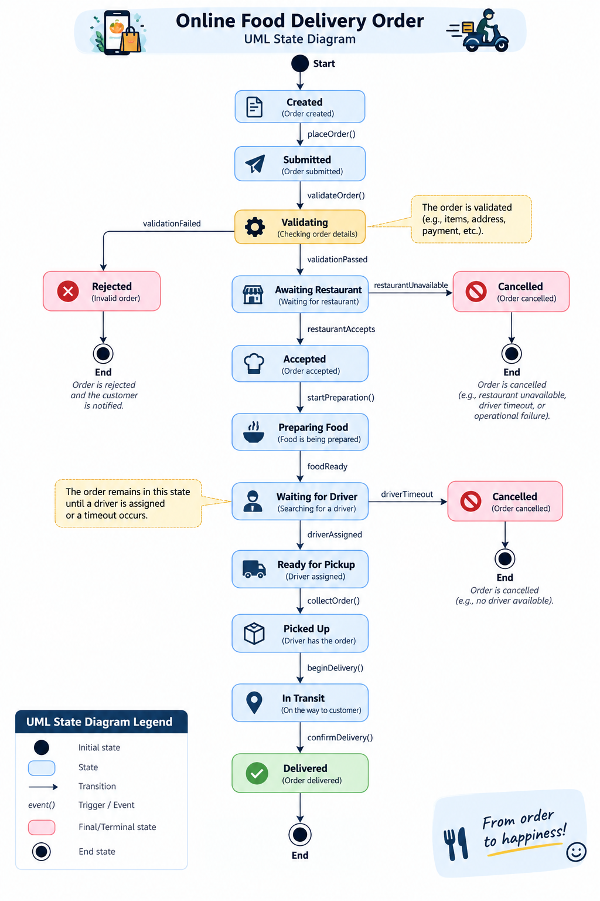
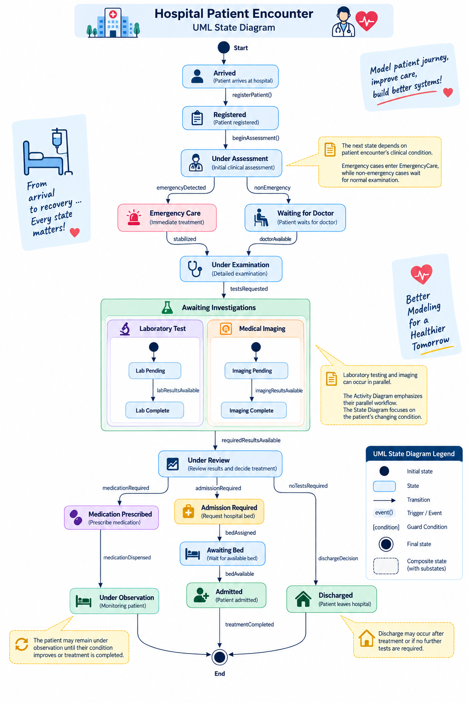

State Machine Case Studies
Three domains, three levels of state-modeling complexity. Read each diagram as the lifecycle of one subject—not as a workflow of people and departments.
Progress from a mostly linear lifecycle, to guarded approval behavior, to a richer patient encounter with nested and concurrent state detail.
Start with states, events and exception exits.
Add guards, eligibility and conditional approval.
Finish with composite/concurrent state behavior.
At every node ask: What is the subject now? On every arrow ask: What event or condition makes that subject change state?
Online Food Delivery Order
The subject is the Order. Follow its condition from creation through validation, restaurant acceptance, food preparation, driver assignment, pickup, transit and delivery. Rejected and Cancelled are alternative terminal outcomes.

University Course Registration Request
The subject is the Registration Request. This case adds validation, eligibility, guards, optional departmental approval, cancellation, rejection and successful registration.

Hospital Patient Encounter
The subject is the Patient Encounter. Emergency vs normal care changes the route, investigations can contain parallel substates, and treatment decisions lead to observation, admission or discharge.

What became more sophisticated?
basic lifecycle + exceptions
guards + conditional approval
composite/concurrent state detail
Do not memorize these domains. Learn the progression: identify a subject, name persistent states, label state-changing events, add guards only when needed, and introduce nested/concurrent detail only when it improves understanding.